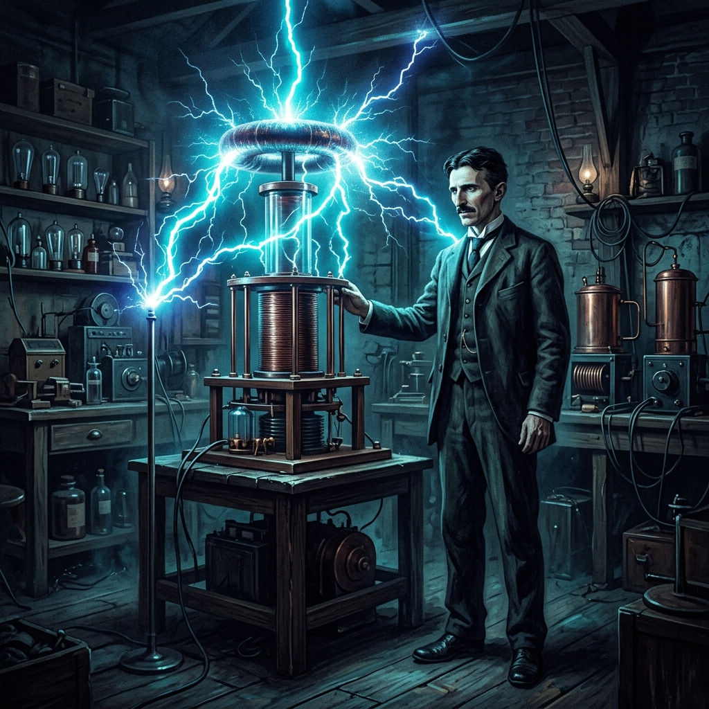

1887
AC Induction Motor
Designed the brushless alternating current induction motor, eliminating sparking commutators and enabling long-distance electrical power transmission across continents.
The Genius Who Lit the World with Alternating Current

Born on July 10, 1856, during a fierce lightning storm in Smiljan, Austrian Empire (modern-day Croatia), Nikola Tesla possessed an extraordinary visual imagination and eidetic memory from an early age. Encouraged by his mother's inventive knack for household tools, Tesla studied engineering and physics at the Technical University of Graz and Charles-Ferdinand University in Prague. It was during these formative academic years that he became obsessed with the inefficiencies of direct current (DC) dynamos and envisioned a revolutionary motor powered by rotating magnetic fields.
Immigrating to the United States in 1884 with little more than four cents in his pocket and a letter of recommendation to Thomas Edison, Tesla quickly embarked on a path that would change human civilization. After parting ways with Edison due to fundamental design disagreements over Direct Current, Tesla patented his groundbreaking Alternating Current (AC) polyphase system. Partnering with industrialist George Westinghouse, Tesla defeated Edison's DC standard in the famous "War of Currents," culminating in illuminating the 1893 World's Columbian Exposition in Chicago and building the world's first hydroelectric power plant at Niagara Falls.
Throughout his prolific career, Tesla filed over 300 patents worldwide, pioneering technologies decades ahead of his era—including high-frequency Tesla Coils, wireless radio transmissions, neon illumination, remote radio control, and early X-ray imaging. Despite his immense scientific contributions, his ambitious Wardenclyffe Tower project aimed at global wireless energy broadcast collapsed due to financial difficulties. Tesla spent his final years in New York City continuing his conceptual research until his death in 1943. Today, his name remains synonymous with genius, innovation, and the international SI unit of magnetic flux density.
Designed the brushless alternating current induction motor, eliminating sparking commutators and enabling long-distance electrical power transmission across continents.
Invented the high-frequency resonant transformer capable of producing electrical sparks extending several feet, foundational to wireless technology, radio, and television physics.
Illuminated the World's Columbian Exposition using Westinghouse AC generators, proving to the world that AC power was safe, reliable, and superior to DC.
Constructed the first large-scale hydroelectric power plant at Niagara Falls, delivering industrial electrical current to Buffalo, New York 22 miles away.
Demonstrated a radio-controlled miniature boat at Madison Square Garden, introducing the concept of robotics, remote control, and radio frequency guidance.
Initiated the construction of a 187-foot wireless transmission tower on Long Island designed for worldwide wireless communication and electrical power distribution.
If you want to find the secrets of the universe, think in terms of energy, frequency and vibration.— Nikola Tesla
"The present is theirs; the future, for which I really worked, is mine."
"My brain is only a receiver, in the Universe there is a core from which we obtain knowledge, strength and inspiration."